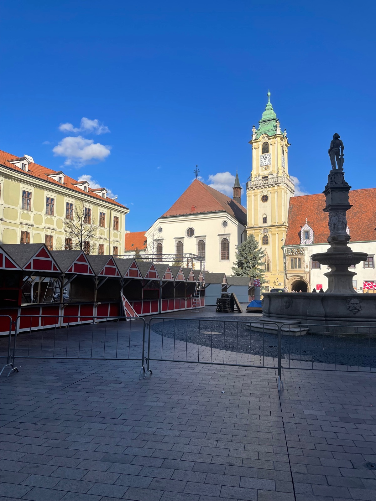
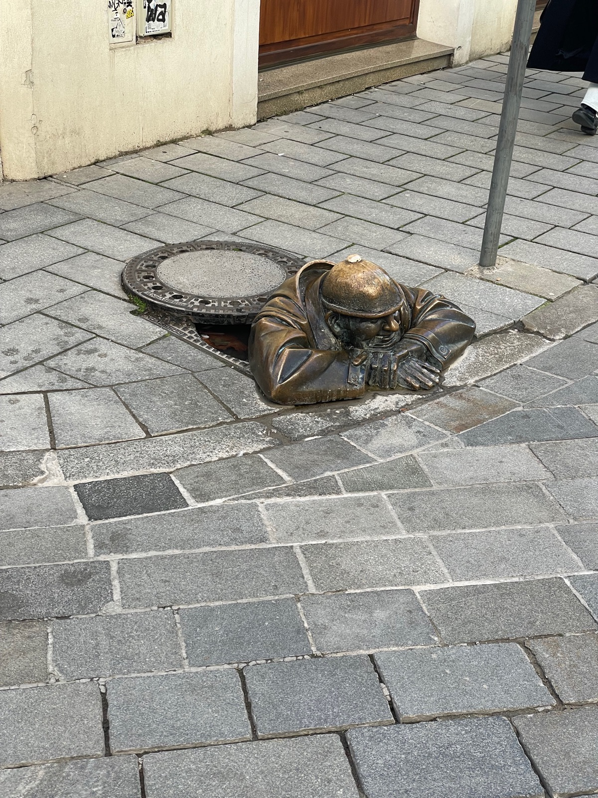

Landmarks & Must-See Spots
3 places
Main Square
HistoricThe heart of Old Town — Gothic, Neo-Baroque, and Romanesque architecture surrounding the Roland Fountain (1572). Home to the Old Town Hall and Bratislava City Museum. Fun to explore.
Hlavné námestie, Staré Mesto
Went here

Blue Church
HistoricArt Nouveau gem built in 1913 — every surface painted in dreamy pastel blue. Such a cute, cool church! One of the most photographed buildings in Bratislava, about 10 minutes' walk from Main Square.
Bezručova 2, Staré Mesto
Went here

Čumil
HistoricIconic bronze statue of a cheerful sewer worker peeking out of a manhole. Legend says touching his head while making a silent wish will make it come true.
Laurinská & Panská streets
Went here